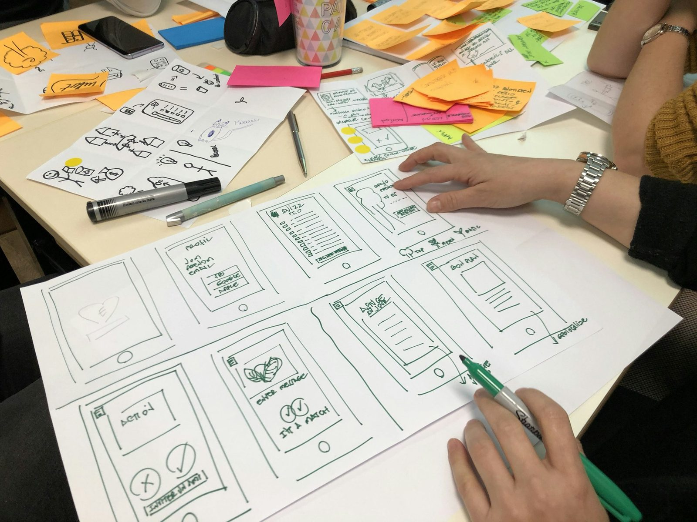
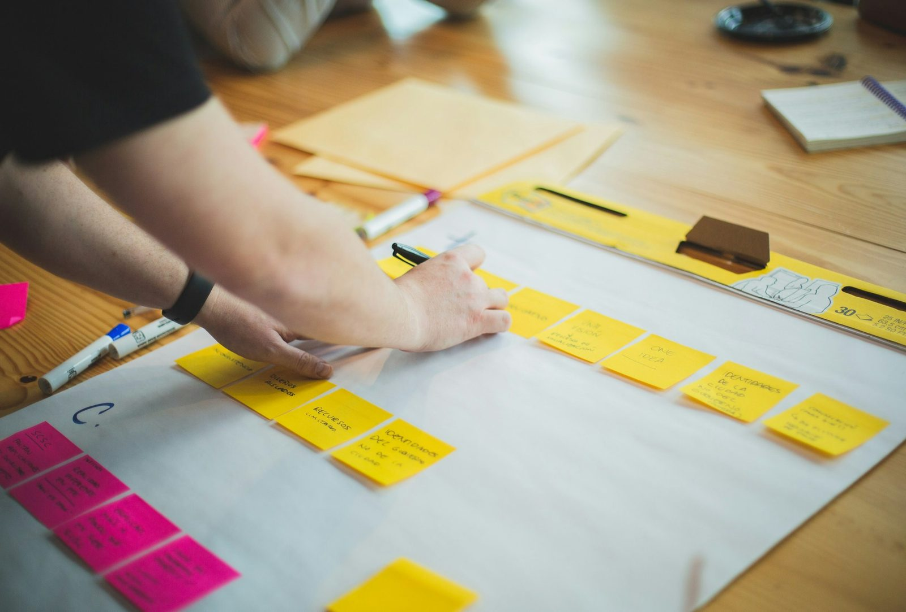
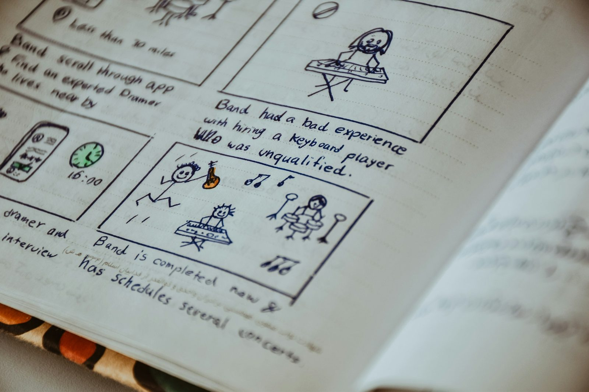
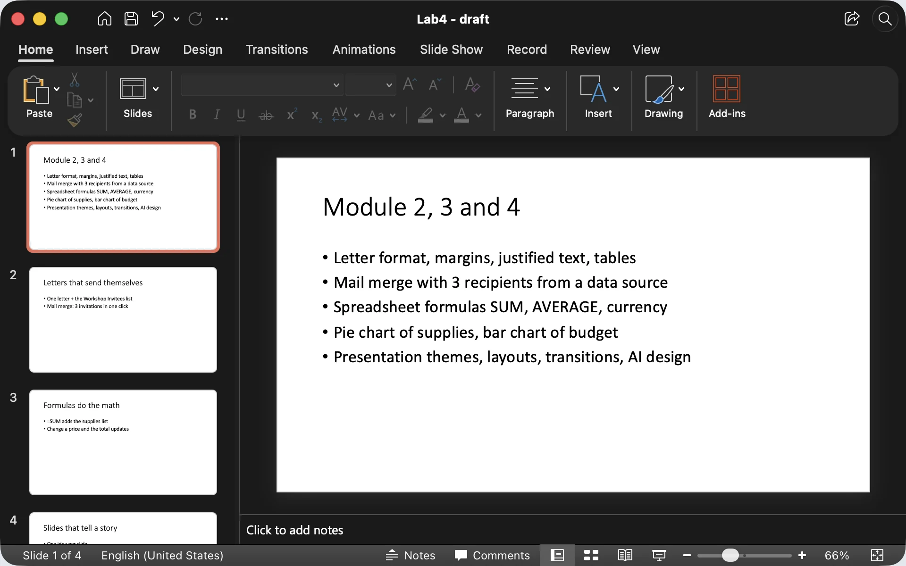
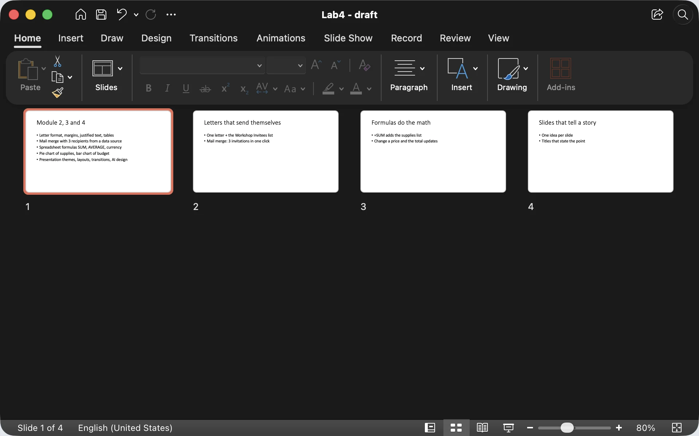
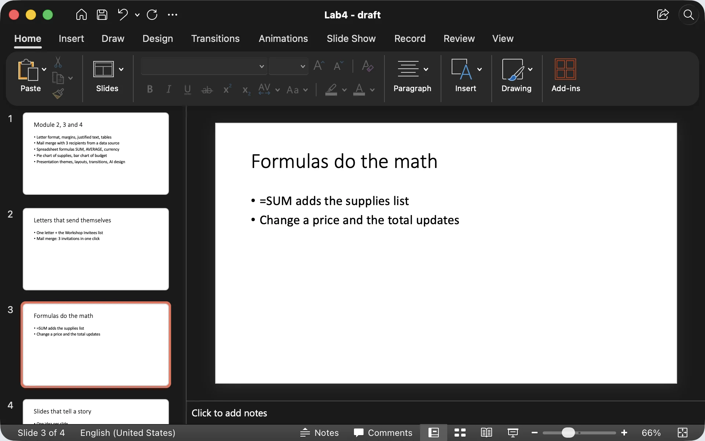
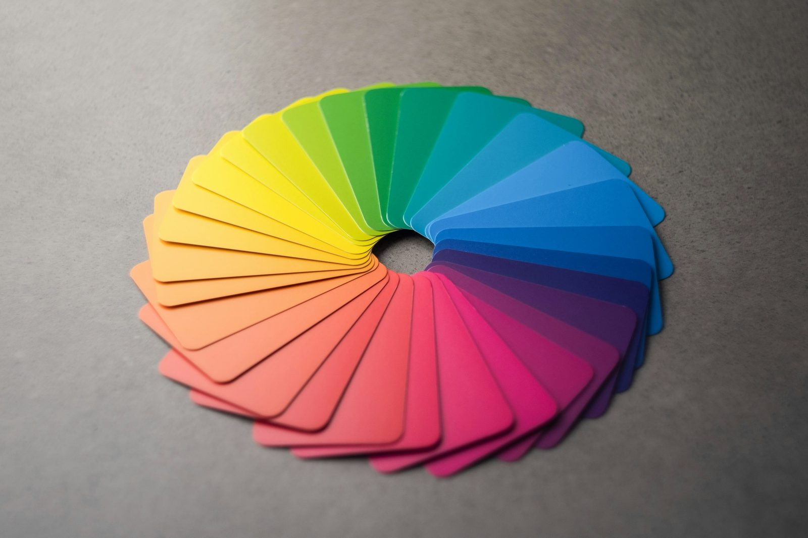
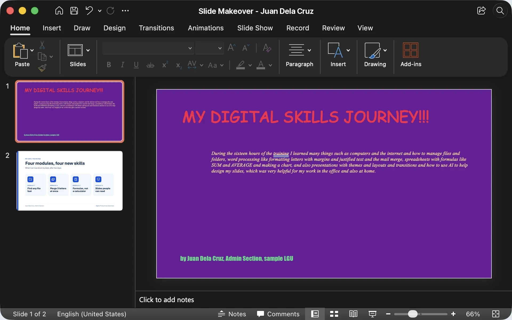
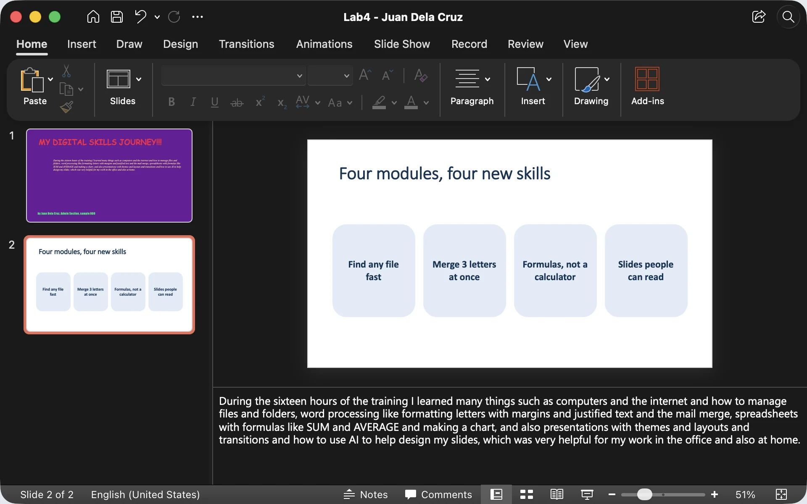

Module 4 · Multimedia Presentation Fundamentals
Plan the message on paper first, then design slides people can actually read.

Welcome to Module 4! Maayong hapon, everyone. We have written letters and built spreadsheets. Now we learn to present what we know.
All through Module 4 I build one short demo deck, "My Digital Skills Journey", so you can watch every step. Today we do the part most people skip: planning and design. No app yet. Just a head, a pen and a piece of paper. The module ends with a 10-item quiz after Topic 4.7.
By the end of this topic
Before you make a single slide.
One idea per slide, in a clear order.
Plus readable fonts, colours and accessibility.
Three verbs: plan, sketch, design. That is the whole topic.
Introduce the demo deck now so everything has a purpose: five slides about my own digital skills journey, with the office supplies inventory chart from Module 3 as proof. Today's paper plan becomes the backbone of that deck. The same steps work for any briefing they make at the office.
The big idea

Nobody buys the balloons before knowing who is coming and why. Yet most of us open PowerPoint and start picking colours first.
Ask: "What's the one dish people talk about after a fiesta?" Usually the lechon. Your presentation needs one "lechon": a single message people remember on the way home. Decoration comes last. Keep this picture in mind for the next three slides.
Step 1 · Plan
What do they already know? What do they need from me?
To inform, to persuade, to train, or to ask for a decision?
The one sentence they should remember tomorrow.
Walk through the three cards. Audience decides how much detail to show. Purpose decides the ending: an informing deck ends with a summary; a persuading deck ends with a request.
The key message is the hardest. Show the demo deck example: one sentence, specific, about the person speaking. Ask: "If your section chief only hears one sentence from your briefing, which sentence should it be?" That is the key message.

Step 2 · Sketch
Professionals in film and advertising storyboard everything before shooting. A deck needs only the small version: one sheet of paper.
Hold up your own paper on camera. Stress step 2: cutting is part of planning. Not everything you know belongs in a five-minute talk. Ask: "Who has prepared a report by opening PowerPoint first and getting stuck at slide 1?" Most hands go up. Paper fixes that block.



Microsoft PowerPoint for Mac, sample demo deck draft. Slide Sorter: View › Slide Sorter (same on Windows). Draft deck: crowded slide and makeover (start)
Rule of thumb
Many people think fewer slides means a shorter talk. Not true. Talk time depends on what you say, not the slide count. Three clear slides take the same time as one crowded one, and people remember them.
Show the titles on the right: "Formulas do the math" is a message; "Module 3" is only a label. Ask: "Think of your last report deck. Which slide title was only a label? How would you turn it into a sentence?"
Step 3 · Design
Make different things very different: dark on light, big title, small label.
Every item lines up with something. Nothing placed "anywhere".
Repeat the same colours, fonts and title position on every slide.
Keep related items close; put space between groups.
These four come from designer Robin Williams' book, The Non-Designer's Design Book, written for people like us who are not designers.
Go card by card. Contrast: light grey text on white looks elegant on your laptop and disappears on a projector. Alignment: use the app's guides. Repetition: same look on every slide, which a theme gives you for free (Topic 4.2). Proximity: a caption belongs right next to its photo. Then teach the squint test: everyone squint at this slide now.
Colour and font choices
2 or 3 colours plus one accent for what matters. Keep the same palette on every slide.
One for titles, one for body, or just one. Plain sans-serif reads best on screens.

A simple palette: a dark colour, a light colour, and one bright accent. The accent is like a highlighter: if everything is highlighted, nothing is.
Fonts: Arial, Calibri, Verdana and Aptos are safe on any office PC. Aptos is the newer Microsoft 365 default. The theme you pick in the app already gives you a matching palette and fonts, so the easiest path is: pick a clean theme and don't override it. Ask: "Who has used Comic Sans on an official document?" Smile, no judgment.
Readability
These sizes are points in PowerPoint, Google Slides or Impress, for a normal widescreen slide. Body text at about 24 points or more is the safe rule.
Since we're online, remind them: many of your viewers watch on a phone screen inside Zoom or Meet. Do the phone test. And in a barangay hall or session room with windows open, projectors look pale, so pale colours vanish. Ask: "Who has seen a slide with text over a photo you couldn't read?"
Accessibility
Big fonts, high contrast, plain backgrounds. Helpful for lolas at a family event and for anyone at the back of the room.
Some people can't tell red from green. Don't use colour alone to show meaning: add a label, icon or pattern.
Give every slide a unique title and add alt text to pictures and charts (Topic 4.4).
Accessibility is not an extra. In a government office, our audience includes senior colleagues, people with low vision, and clients of all ages.
Demo if you can: open any PowerPoint file, go to Review, Check Accessibility, and show the list it gives. Google Slides and Impress don't have the same checker, so there you check by hand: titles, alt text, contrast. Ask: "Has anyone used a red-and-green status chart?" That is the classic colour-only trap.


Microsoft PowerPoint for Mac, sample demo deck. The Notes pane sits under the slide on Windows too. Draft deck: crowded slide and makeover (start) Makeover sample (finished)
Slide makeover
Start on the before frame and ask: "What's wrong with this slide?" Take three quick answers, then click through. Same information, but now the title carries the message and the details become four short, equal cells. The long paragraph didn't disappear: it moves into the speaker notes and into what you say out loud. We cover that in Topic 4.3.
Point to each principle: contrast in the dark title, alignment in the grid, repetition in the four identical cells, proximity of each icon to its label. Ask: "Which version would your section chief rather see at 4:30 pm on a Friday?"
Space or K plays and pauses (or click the video). C turns captions on or off; the speed button offers 1.25× and 0.85×. The arrows still move between slides, and the video pauses when you leave this slide.
Length 4:57. Pause anywhere to take a question; captions stay on screen for anyone without sound.
After the video, take one or two questions before the quick check.
Quick check · click an answer
Give them a minute to answer in the portal, then click the options to reveal. The answer is B.
Point out that A, C and D are all real decisions, just not the first ones. A good follow-up: "What might the key message be?" For example, "We need to reorder bond paper this week, because it is our biggest supply cost." That sentence becomes slide 2.
Recap · Topic 4.1
Audience, purpose and one key message, before any slide.
Storyboard on paper: one idea per slide, titles that say something.
Contrast, alignment, repetition, proximity; big fonts; accessible to all.
Next · 4.2 Application Navigation and Slide Management: turning a paper storyboard into real slides.
Summarize: plan, sketch, design, in that order. In the very next topic, the paper storyboard becomes real slides.
Bridge to 4.2: "Now let's open PowerPoint, Google Slides or Impress and turn those five boxes into five real slides." Quick stretch break if needed. Salamat!